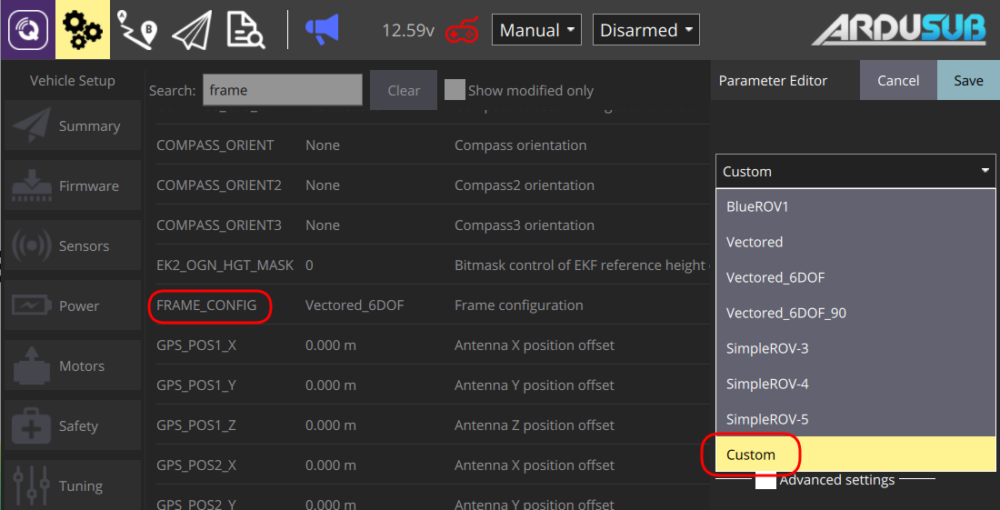

⚠️ ARCHIVE NOTICE ⚠️
This documentation is no longer being maintained!
- The new ArduSub docs are located in the ArduPilot wiki. Updated pages will be redirected.
- The Companion Computer Software is also archived, and has been replaced by BlueOS.
- For Control Station Software, see QGroundControl or Cockpit (our new alternative).
Developers
How to Get the Code
ArduSub is hosted and maintained on github. You need to clone the repository to have full code access including submodules.
git clone https://github.com/ardupilot/ardupilot.git
cd ardupilot
git submodule update --init --recursive
Compiling
Before compiling ArduSub, first checkout the ArduSub-stable tag into a new branch (here we call it new-branch):
git fetch --tags
git checkout ArduSub-stable -b new-branch
git submodule update --init --recursive
To set up your build environment, follow these instructions:
Skip the clone instructions in the links above, as they could cause you to use master instead of ArduSub-stable and lead the install scripts to install a different set of tools.
WAF
Waf is a global build system for ArduPilot repository, it's necessary to be inside the root folder of ArduPilot to use it. You can check how to use waf with:
./waf --help
To configure waf to build ArduSub for Pixhawk 1:
./waf configure --board Pixhawk1
And to compile:
./waf sub
The firmware file will be created at ardupilot/build/Pixhawk1/bin/ardusub.apj
Uploading Locally
This only works with a direct USB connection to the Pixhawk, and to upload the code:
waf: Use --upload with the vehicle type (only works after configuring and building with waf before).
./waf --upload sub
Uploading Remotely
With an Ethernet tether and companion computer, it is possible to flash the Pixhawk firmware through the companion computer - no need to directly access the Pixhawk.
Flashing Via Web Interface
Navigate to 192.168.2.2:2770/system in your browser. Under the 'Pixhawk Firmware Update' section, click 'Browse' and select the firmware file (.apj) saved on your computer. Click 'Upload' and wait for the flashing process to complete.
Running
The code begins running immediately once uploaded. For Linux-based autopilots, it must be launched or started with launch script. Please see the documentation for your respective autopilot.
Making a Custom Configuration
One of the biggest additions to the ArduSub code is a six degree-of-freedom motor library that allows a wide variety of motor configurations to be set up easily. The motors libraries for each configuration are built on a set of higher-level motor classes as follows:
AP_Motors
|---- AP_MotorsMulticopter
|---- AP_MotorsMatrix
|---- AP_Motors6DOF
To add a new motor configuration, you will need to add your custom motor setup to AP_Motors6DOF.cpp. Find the following line, and add your frame configuration there. The frame is configured at boot according to the FRAME_CONFIG parameter. You will need to change this parameter to CUSTOM to use your custom frame.
case AS_MOTORS_CUSTOM_FRAME:
// Put your custom motor setup here
The behavior of each motor will be defined by its assigned contributions to each of the 6 degrees of freedom in AP_Motors6DOF.cpp. You can use the other frame configurations as a reference guide to defining your own custom configuration. Here is the BlueROV1 frame configuration as an example:
| Motor # | Roll Factor | Pitch Factor | Yaw Factor | Throttle Factor | Forward Factor | Lateral Factor |
|---|---|---|---|---|---|---|
| 1 | 0 | 0 | -1.0 | 0 | 1.0 | 0 |
| 2 | 0 | 0 | 1.0 | 0 | 1.0 | 0 |
| 3 | -0.5 | 0.5 | 0 | 0.45 | 0 | 0 |
| 4 | 0.5 | 0.5 | 0 | 0.45 | 0 | 0 |
| 5 | 0 | -1.0 | 0 | 1.0 | 0 | 0 |
| 6 | -0.25 | 0 | 0 | 0 | 0 | 1.0 |

Using the New Custom Configuration
To use the newly created frame, set the FRAME_CONFIG parameter to "Custom" in QGroundControl and then reboot the flight controller.

Troubleshooting
- If something goes wrong while compiling:
- Check the compiling section to set up your environment.
- ArduSub is only compatible with GCC 6. Be sure that "gcc-arm-none-eabi 6" is your "PATH" env with:
echo $PATH | grep gcc-arm-none-eabi.- It's also possible to add custom paths for the compiler with
export PATH=/your_path/gcc-arm-none-eabi-6-2017-q2-update/bin/:$PATH. Run./waf configure --board Pixhawk1again if compiling with WAF.
- It's also possible to add custom paths for the compiler with
Sponsored by Blue Robotics. Code released under the GPLv3 License. Documentation released under the CC-NC-SA 4.0.
Submit a Documentation GitHub Issue here to report any errors, suggestions, or missing information in this documentation.
Submit an ArduSub GitHub Issue here to report issues with the ArduSub software.